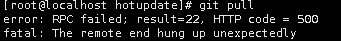

问题描述
GitLab 使用git pull 时出现：

error： RPC failed;result=22 HTTP code=500
fatal： The remote end hung up unexpectedly
问题原因
Gitlab 服务器为使用 docker 启动，docker 日志把磁盘写满了导致无法继续写入日志。
解决方案
快速解决版本
进入 docker 日志目录手动删除日志 重启 docker 服务1234cd /var/lib/docker/containers/container_id/以json.log结尾的文件即为业务日志文件rm -f *json.logsystemctl restart docker永久解决办法
设置 docker 日志文件大小和数量
|
|